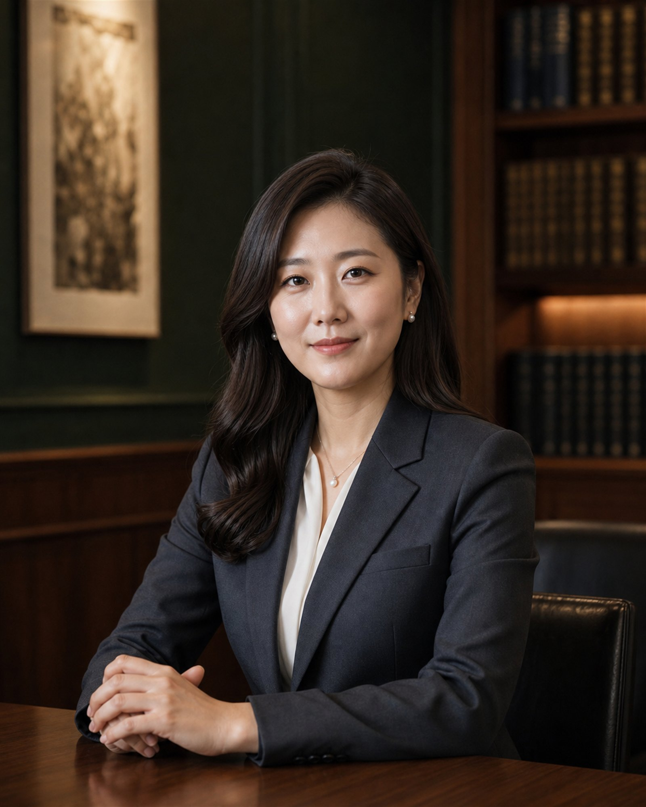

ATTORNEYS
끝까지 같은 변호사가 갑니다
상담한 변호사가 서류도 쓰고 법정에도 갑니다. 사무장이 대신 진행하지 않습니다.

정새벽대표 변호사
변호사 · 경력 17년
개인회생과 파산 사건만 맡아 왔습니다. 소득과 부양가족 구성에 따라 변제금이 얼마나 달라지는지 먼저 계산해 드립니다.
- 개인회생 인가 누적 900건 이상
- 법인 파산 · 청산
- 금융기관 채권 대응

배수연변호사
변호사 · 경력 8년
서류 준비를 함께 합니다. 무엇이 왜 필요한지 설명하고, 못 구하는 서류는 대신 발급받아 옵니다.
- 채권자 목록 · 재산목록 작성
- 금지명령 · 중지명령 신청
- 면책 이후 신용 회복 안내